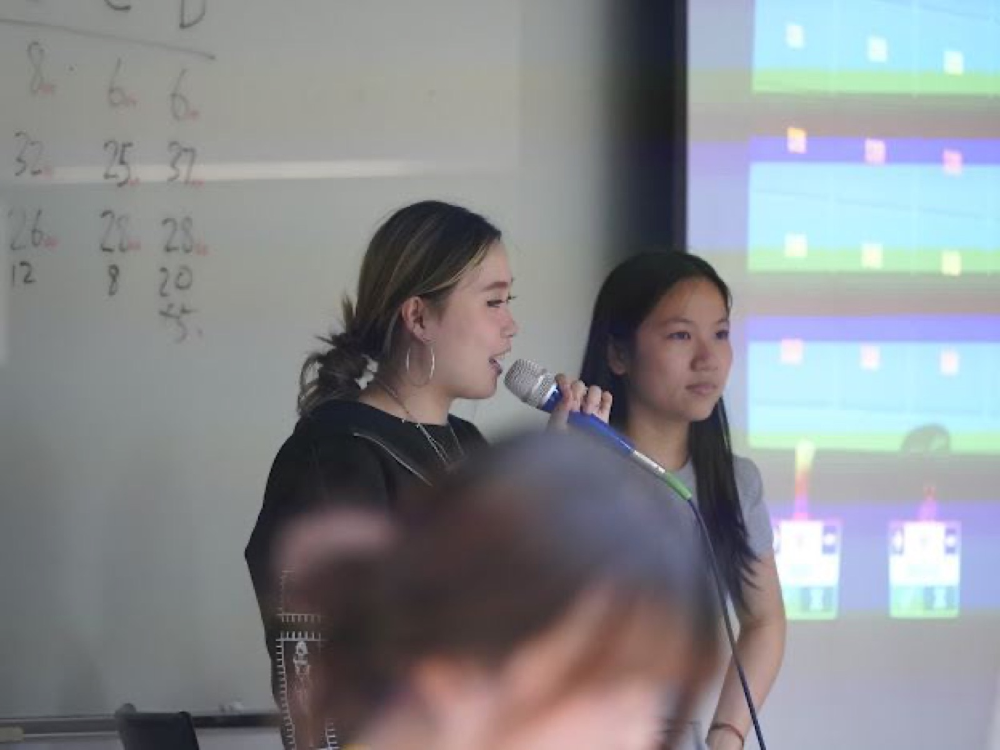
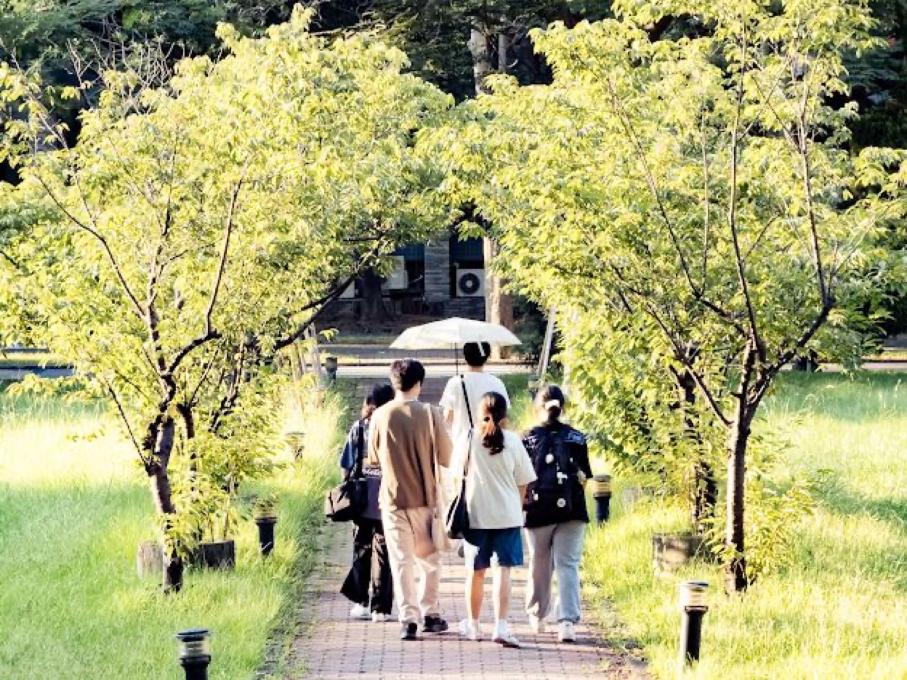
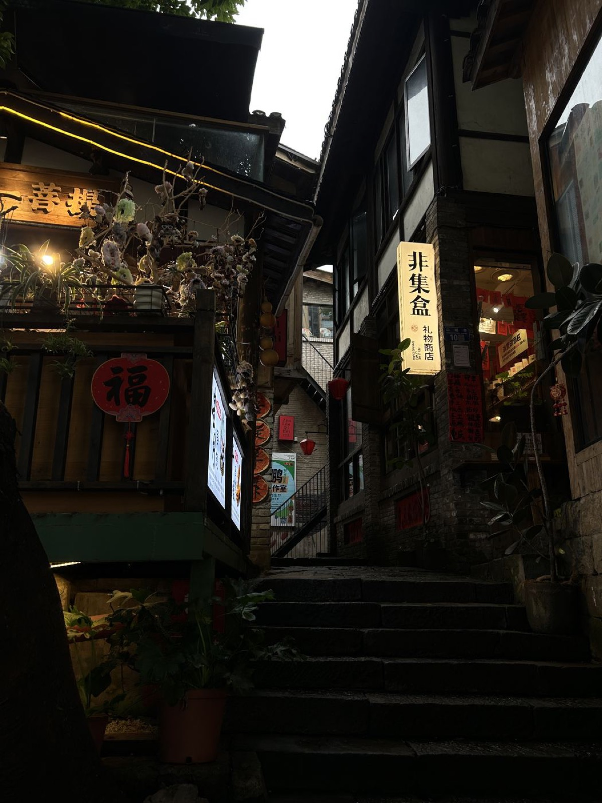
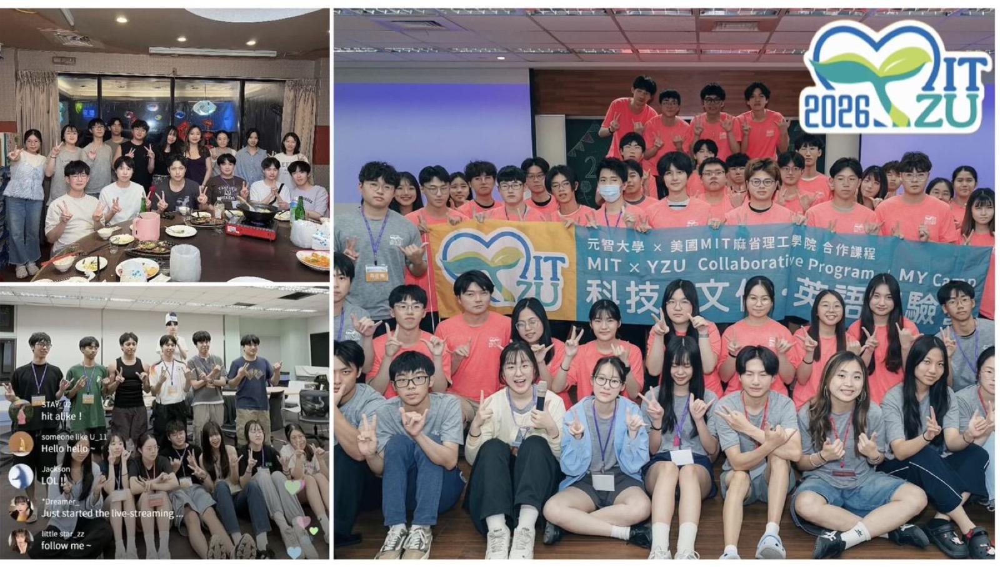
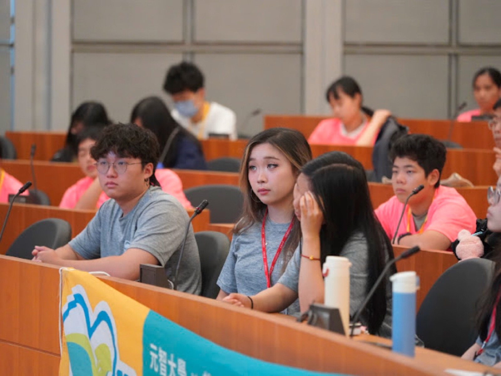
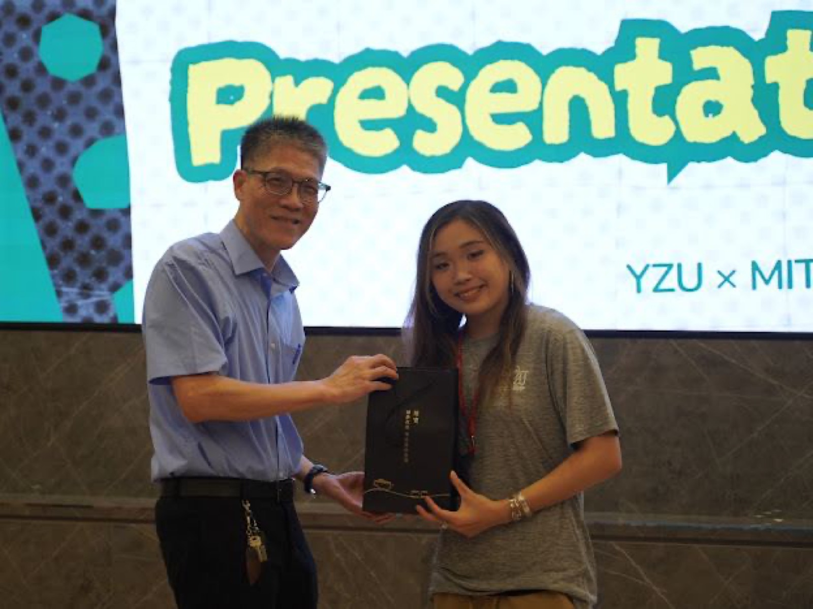
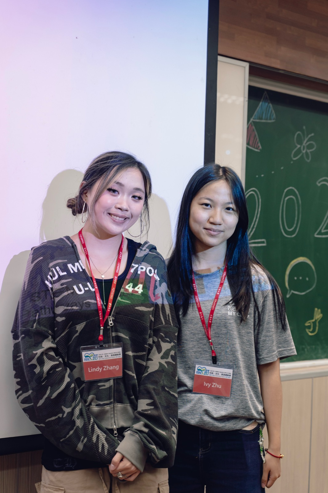

cs + math at MIT. i just spent the summer building AI tools for a bank in Taipei, and i'm currently doing research at CSAIL. off the clock, i'm usually running by the Charles River, at a cute cafe, or on a tennis court!
i'm a student studying Computer Science and Mathematics at MIT (6-4 + 18).
so far, in terms of research, i've been exploring when we can trust what an LLM says, whether that's mapping software vulnerabilities for cybersecurity agents (CSAIL, ALFA Lab) or checking how well models describe events in satellite imagery (Aero-Astro, STAR Lab). i also care a lot about the safety side, which is why i spent the summer as an AISF Fellow with MIT AI Alignment.
i'm the Mentorship Chair for MIT Women in AI, where i work on helping more women and underrepresented students find their place in CS and AI.
i'm looking for software engineering, AI/ML, and hardware-adjacent internships for Summer 2027.
outside of tech, i like early morning long runs, afternoon tennis on hot sunny days, and a good matcha (or coffee) at an aesthetic cafe. if you can't find me, look for the nearest cafe: i'll probably be there :)

a few pieces i've written, inspired by my mother and the places i call home.
A group of aunties crowd a street vendor selling fresh durian, the shrill of their haggling piercing the air. Amidst the chaos of the market, children still wearing their school-issued uniforms shriek and swerve around customers...
On my mother's life before I knew her, and the fragments I've managed to gather together

training toward a full marathon (and maybe an Ironman 70.3 soon...)
strava, if you're curiousgrew up playing competitive USTA tournaments, still compete nationally for the MIT club team, and try to squeeze in a game of doubles whenever i have free time.

absolute matcha fanatic (and a bit of a coffee addict too). always looking for new cozy cafes to try.

spent two weeks this summer as the lead instructor for an MIT and Yuan Ze University program in Taiwan, teaching machine learning, Python, and English to YZU students and high schoolers.



A small vector search engine I built to understand retrieval: a brute-force k-NN baseline, an IVF index, and filtered search, benchmarked on the tradeoff between recall and latency. I'm building it alongside the approximate nearest neighbor papers I've been reading for my systems research.
A GPT-style Transformer built from scratch as a PyTorch review exercise: implemented attention, causal masking, training loop, and sampling.
A retrieval-augmented generation pipeline for KYCC/AML due diligence to extend my work from my summer internship. Implemented chunking, embeddings, and vector search, with citation grounding and consistency checks to catch hallucinated findings before they reach a report.
An end-to-end face recognition pipeline: MTCNN finds and aligns faces, InceptionResnetV1 turns them into embeddings, and an SVM classifies identities, with a nearest-neighbor distance check to flag faces it hasn't seen before.
all about me.